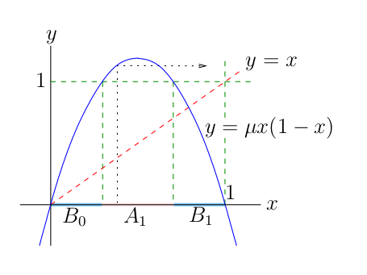
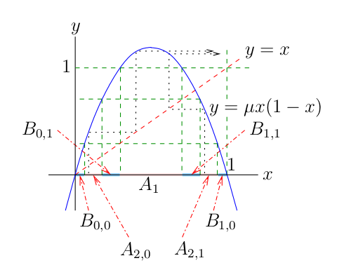
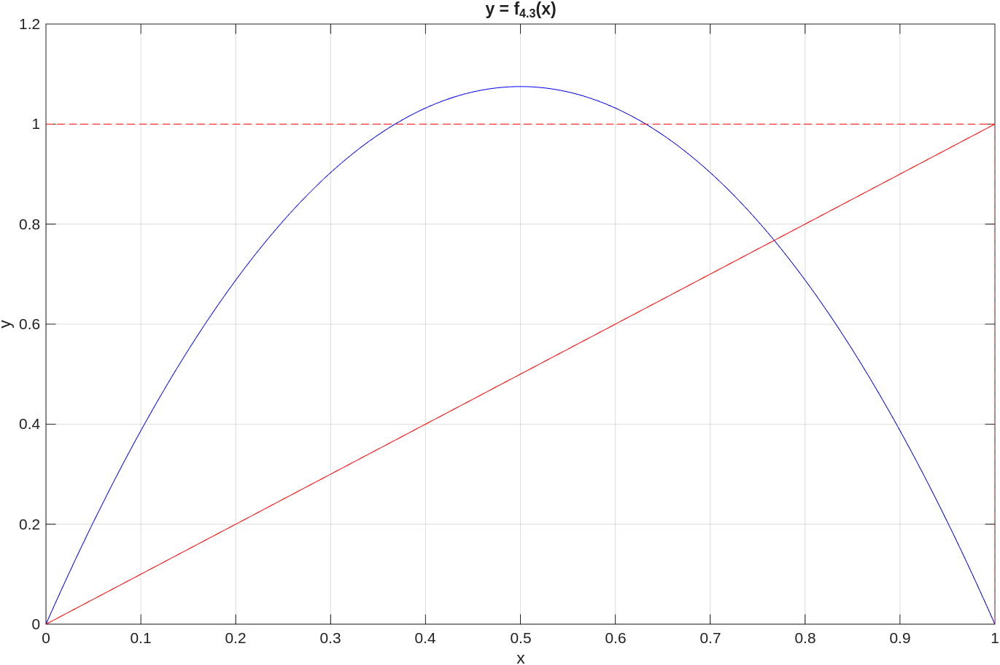
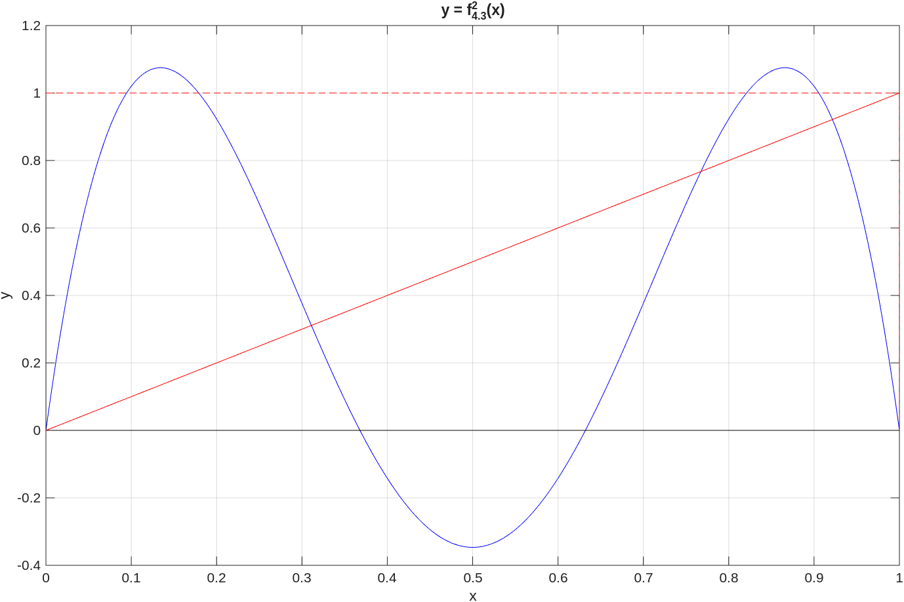
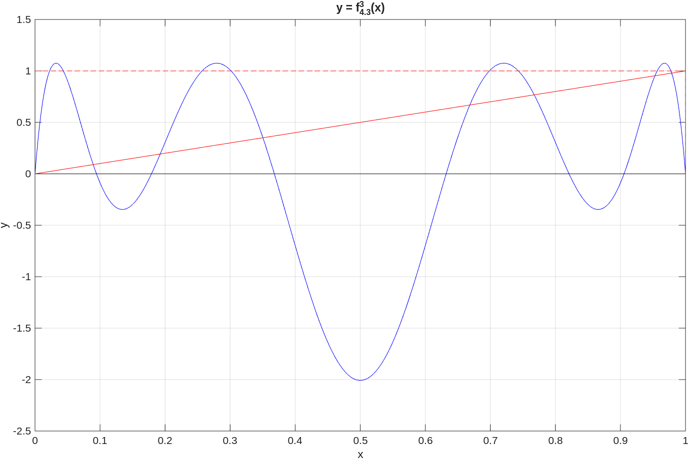
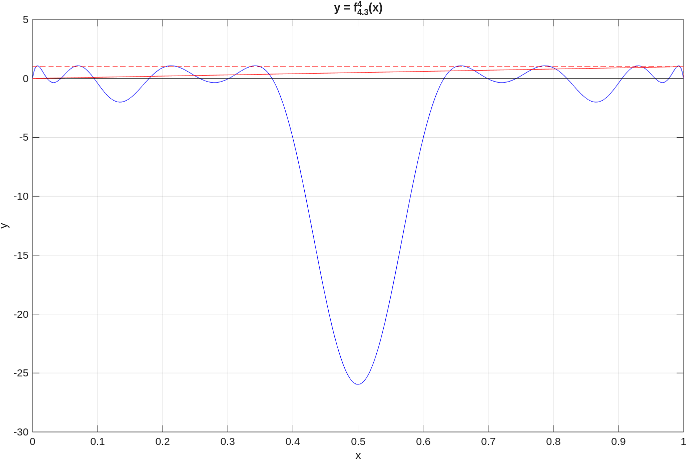
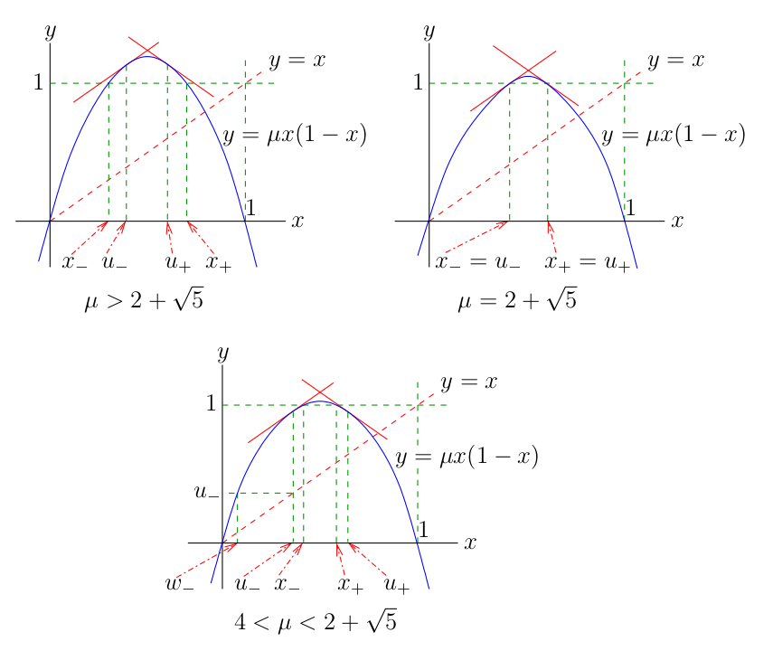

| Previous document | Next document |
To motivate the definition of chaotic behaviour for a DDS, we start with a very simple map from the unit circle to itself. After that, we consider the DDS generated by the logistic function with .
We consider the unit circle in the complex plane defined by . The function defined by is an isomorphism between and . It is usual to defined the distance between as , the smallest distance between and along the circle . With this definition of distance on , the function is an isometry.
Example: Using the isomorphism defined in the previous paragraph, the function defined by corresponds to the function defined by All the points are periodic points of period This proves that Sarkovskii's theorem is not valid on . This is the example that we mentioned at the end of the .
Using the isomorphism defined at the beginning of this section, the function defined by corresponds to the function defined by . Therefore, the behaviour of the DDS generated by the function acting on is identical to the behaviour of the DDS generated by the function acting on . The function satisfies several properties.
Definition: Suppose that is a topological space. A function is topologically transitive if, for every pair of open sets , there exists an integer such that .
It follows from (2) above that is topologically transitive. Roughly speaking, this means that the domain of the DDS generated by cannot be decomposed into two disjoint and -invariant open sets.
Definition: Suppose that is a topological space. A function has sensitive dependence on initial conditions if there exists such that, for every and open neighbourhood of , we have that for some point and integer .
It follows from (3) above that has sensitive dependence on initial conditions. Roughly speaking, this means that there are points as closed as we want to a given initial point such that does not stay closed to for all .
Remark: The butterfly effect is a popular expression referring to sensitive dependence on initial conditions. It is also often associate to chaos. The origin of this expression goes back to the simplified mathematical model for weather prediction introduced by Edward N. Lorenz. Lorenz observed numerically that a very small variation of the initial conditions produced a completely different solution. To draw attention to his observations, Lorenz asked the following question which is now famous. Does the flap of a butterfly’s wings in Brazil set off a tornado in Texas?. Lorenz' model is a system of differential equations that has what is called a strange attractor. The strange attractor for Lorenz' model is called the Lorenz attractor.
The three properties of mentioned above are those required to say that a function has a chaotic behaviour.
Definition: Suppose that is a metric space. A function has a chaotic behaviour or is chaotic on if
We have that defined above is chaotic.
Remark: Suppose that is a continuous function on a metric space . It has been proved by that topologically transitive and dense in implies sensitive dependence on initial conditions. Nevertheless, we keep the tradition of using the definition of chaotic behaviour given above because it lists three of the must important properties of chaotic behaviour. Moreover, it has been proved by that sensitive dependence on initial conditions and in do not imply topologically transitive, and sensitive dependence on initial conditions and topologically transitive do not imply that is dense in
We consider the function defined by where . Using our isomorphism between and , the function corresponds to the function defined by for .
Theorem (Jacobi): If is an irrational number, then each orbit generated by is dense in .
Proof: Given , we need to prove that is dense in . ...
We first show that the points of the orbit are distinct. If , then . Hence, ; namely, . Since is irrational, we must have that .
It follows from the previous paragraph that {gq∘j(θ)}j≥0 is an infinite sequence of the compact set . Thus, there exists a converging subsequence Given , there exist positive integers such that, if we select , then . Since preserves the distance on (it is just a rotation by ), we get that for . Again, since preserves the distance on , we get that for . Hence, if for . denote the closed arcs of length on bounded by and , then a finite number of them will eventually cover . Hence, all points on are a distance lest than from one of the points for .
To prove that is dense in , it suffices to show that, given any and , there exists some such that . But this is a consequence of the result proved in the previous paragraph because belongs to one of the arcs . ∎
Suppose that is a continuous function on a metric space . It is easy to prove that if there exists a dense orbit in of the form for some , then is topologically transitive. So, the function of Jacobi's theorem is topologically transitive. However, does not have sensitive dependence on initial conditions because preserve the distance. Moreover, as we have shown in the first paragraph of the proof of Jacobi's theorem, does not have any periodic point.
A lot more can be said about functions from to itself but that will divert us from the main topic of this document.
We briefly introduce one of the tools that will be used to study the qualitative behaviour of the DDS generated by the logistic function for .
Definition: The set is called the sequence space on two symbols.
Proposition: The function defined by for and in is a metric on
Proof: We have that for all , and if and only if for all ; namely, . We have that because for all . Finally, given , we have that because for all . ∎
Proposition: Suppose that . If for , then . If , then for .
Proof: If for , then . If for some , then
Definition: The shift map (on two symbols) is the function defined by for all .
Proposition: The function is continuous.
Proof: We prove that is continuous at an arbitrary point .
Given , we choose a positive integer such that and let . If is such that , then for according to the previous proposition. Let and . Since for , we get from the previous proposition that . ∎
It is usually easy to prove properties associated to periodic points for . For instance, the set of points such that is of cardinality . To prove this claim, it suffices to note that the points such that are of the from . There are different combinations of and of length .
The reader may suspect that the following result will play a major role in the study of the qualitative behaviour of the DDS generated by later on.
Proposition:
Proof:
Given , we have that is a sequence of periodic points converging to as because as . This proves (1). ...
To prove (2), let
Given and , we choose a positive integer such that . There exists a positive integer such that the component of equals the component of for . We then have that .
To prove that has sensitive dependence on initial conditions, we choose any . Given and an open neighbourhood of , we choose such that . Hence, there exists an integer such that . Therefore, . ∎
The second property of in the previous proposition implies that is topologically transitive. We therefore get the following result.
Corollary: has a chaotic behaviour.
We are continuing our study of the DDS generated by the logistic function defined by . In this section, we assume that . It is important to note that we no longer have when . The reader may use the graphical application for the logistic function that can be found in the to observe that almost all the orbits generated by with converge very rapidly to . To get a realistic cobweb graph, the number of iterations should be small because the convergence to is very fast.
The following concept will be used to study the qualitative behaviour of the DDS generated by .
Definition: Suppose that and . are two metric spaces, and that and are two continuous functions. We say that and are topologically conjugate if there exists an homeomorphism such that on . The function is called a topological conjugacy between and .
The DDS generated by two topologically conjugate functions have the same qualitative behaviour. In particular, if one of them has a chaotic behaviour, then the other also has a chaotic behaviour. To study the qualitative behaviour of the DDS generated by with , we show that the function defined on a special invariant subset of is topologically conjugate to a shift map on two symbols defined in the previous section.
If , then as it can be observed in the following figure.

Let . We have that is an open set and as for all .
Let and . Since the function is increasing on and , there exists an open interval such that Similarly, since the function is decreasing on and , there exists an open interval such that . The union of and is the set .

The set is the union of four closed intervals , , and as illustrated in the figure above. Since the function is increasing on and , there exists an open interval such that . Since the function is increasing on and , there exists an open interval such that . Similarly, we get such that and such that The union of the four intervals with is the set .
Proceeding inductively, we get the open sets
and the closed intervals
where for all . We prove by induction that
The result is trivial for . For , we have that
Hence, the result is true for . We assume that the result is true for . Then
where the second comes from the induction hypothesis. This complete the proof by induction.
The set is the union of disjoint open intervals. The set is the union of closed intervals because is the union of open intervals. In fact, .
We have that for all and . Moreover, alternates between increasing an decreasing on adjacent intervals of the form . Hence has humps and thus fixed points.




Let . We also have that where . Since is a closed subset of the compact set , we have that is compact. If are two distinct elements, let be the smallest integer such that . Hence, because , and .
Since
we have that is -invariant; namely, . Since as for , we have that is the largest invariant set under the action of .
Our goal is to prove that satisfies the following definition and is chaotic.
Definition: A subset of ℝ is a Cantor set if is closed, is totally disconnected (i.e. contains no open interval), and is perfect (i.e. every point of is the limit of other points in ).
The best known example of Cantor set is the Cantor middle-third set defined by .
We basically follow the presentation adopted in the article by . We start with a definition and some preliminary results.
Definition: Let be a continuously differentiable function. A set is hyperbolic with respect to if there exist and such that for all and .
Lemma Ⅰ: Let be a continuously differentiable function, and be a compact set invariant under the action of . If for all , then is hyperbolic with respect to if and only if, for each , there exists such that .
Proof: The only if
part of the proof is
obvious. It suffices to choose
large enough in the definition of hyperbolic sets with respect to
.
...
The if
part of the proof is more demanding. It is
based on the relation
for
.
If
,
then
satisfies the definition hyperbolic set with respect to
with
and
.
We may therefore assume that
.
We note that
because
is continuously differentiable on the compact set
and
for all
.
For each
,
we select
and let
.
The collection
is an open cover of the compact set
.
Thus, there exists a finite subcover
.
Let
and
for
.
Then
for
.
Let , and . We have by construction that and . The reminder of the proof is to show that for all and . This is proved by wisely splitting the product in the expression for above. Given and ,
Finally, we choose the larger integer such that and let with the convention that for . We have that and . Since and we get that . Hence,
with the convention that for . ∎
Lemma Ⅱ: The set is a hyperbolic set with respect to for .
Proof: According to , it suffices to prove that, for each , there exists such that . We note that for all because . ...
We get from that . We get from that . We have that for . There are two cases to consider. If , then for all . Therefore, we may choose for all in to conclude that is a hyperbolic set with respect to .

2 + 5^(1/2), mu = 2 + 5^(1/2) and 4 < mu < 2 + 5^(1/2), including the points x_{+/-} and u_{+/-}" class="framed">The case requires more work. If , then . Thus, we may choose in for this point .
We assume from now on that . We have that . Thus, we need to find that satisfies the condition . in . As for the proof of , the formula is at the heart of the present proof. The reminder of the proof is technical but elementary.
This concludes the proof. ∎
Theorem: For , the set is a Cantor set and the function fμ:Δ → Δ is chaotic.
Proof:
Part A: We proof that
fμ:Δ → Δ is
chaotic.
We first prove that Bs contains only one point for every s ∈ Σ2. It suffices to prove that Bs is not a closed interval of length greater than 0. It follows from that there exist C > 0 and r > 1 such that |(fμ∘n)'(x)| ≥ Crn for all x ∈ Δ and n > 0. Given s ∈ Σ2, we suppose that Bs = [a,b] ⊂ Δ with a < b. By the Mean Value Theorem, there exists ξn ∈ ]a,b[ such that ...
for all n ∈ ℕ. It follows that |fμ∘n(a)-fμ∘n(b)| → ∞ as . This is a contradiction that is invariant under the action of and that is bounded.
It follows from the previous paragraph that the function H:Δ → Σ2 defined by H(x) = s for Bs = {x} is well defined. It is also a bijection between and Σ2. To prove that H is a continuous function, we prove that H is continuous at an arbitrary point x ∈ Δ. Suppose that H(x) = s. Given ε > 0, we choose n ∈ ℕ such that 2-n < ε, and δ > 0 such that Δ ∩ ]x-δ,x+δ[ ⊂ Bs0,s1,...,sn. Hence, if y ∈ ]x-δ,x+δ[ ∩ Δ, then H(y) = (s0,s1,...,sn,...). Therefore, d(H(y),s) ≤ 2-m < ε. To prove that H-1 is a continuous function, we prove that H-1 is continuous at an arbitrary point s ∈ Σ2. Suppose that H-1(s) = x; namely, H(x) = s. Given ε > 0, we choose n ∈ ℕ such that diam(Bs0,s1,...,sn) < ε. This is possible because Bs0 ⊃ Bs0,s1 ⊃ Bs0,s1,s2 ⊃ ... with {x} = Bs = ∩m≥0 Bs0,s1,...,sm. Let δ = 2-m. If t ∈ Σ2 and d(t,s) < δ, then tj = sj for 0 ≤ j ≤ n. Therefore, H-1(t) ∈ Bs0,s1,...,sn and so |H-1(y)-x| < ε.
We now prove that σ∘H = H∘fμ on . We consider an arbitrary point x ∈ Δ and assume that H(x) = s. Since {x} = Bs = ∩n≥0Bs0,s1,...,sn, we get that
for a point y ∈ Δ, where the second inclusion comes from fμ(Bs0,s1,...,sn) ⊂ Bs1,s2,...,sn as we have seen before. Thus H(fμ(x)) = H(y) = (s1,s2,...) = σ(s) = σ(H(x).
Since the function fμ:Δ → Δ is topologically conjugate to σ:Σ2 → Σ2, a function with a chaotic behaviour on Σ2, we have that has a chaotic behaviour on .
Part B: We prove that is a Cantor set.We have seen that is compact and so closed. The first paragraph of this proof can be easily adapted to prove that is also totally disconnected. It also follows from the topological conjugacy between and Σ2 that there exists x ∈ Δ such that {fμj(x)}j≥0 is a dense orbit in . This implies that is perfect. This completes the proof that is a cantor set. ∎
The DDS generated by the logistic function for μ = 4 also exhibits a chaotic behaviour. More precisely, we have the following result.
Theorem: For μ = 4, the DDS generated by fμ:[0,1] → [0,1] is chaotic.
The invariant set on which f4 is chaotic is not a Cantor set. The technique used to study the qualitative behaviour of the DDS generated by for cannot be used to study the qualitative behaviour of the DDS generated by f4.
Proof: We first prove that the function f4:[0,1] → [0,1] is semi-conjugate to the function defined in the section above. Namely, we define a continuous function H:S1 → [0,1] such that H∘g = f4∘H but H is not an isomorphism. ...
Let H1:S1 → [-1,1] be the function defined by H1(θ) = cos(θ), and H2:[-1,1] → [0,1] be the function defined by H2(x) = (1-x)/2. If h:[-1,1] → [-1,1] is the function defined by h(x) = 2x2-1, then
and
Hence, if H = H2∘H1, then
We note that H:S1 → [0,1] is a two to one function because H(θ) = H(2π-θ). We however have that the function H:S1 → [0,1] is onto. Since H does not define a topological conjugacy between f4 and , we cannot automatically conclude that f4 is chaotic on [0,1] because is chaotic on S1.
To prove that the function f4:[0,1] → [0,1] is topologically transitive, let U,V be two open intervals in [0,1]. We choose two open sets (two open arcs) , on S1 such that H() ⊂ U and H() ⊂ V. Since is topologically transitive, there exists an integer n ≥ 0 such that g∘n() ∩ ≠ ∅. Hence,
To prove that the function f4:[0,1] → [0,1] has sensitive dependence on initial conditions, we choose δ ∈ ]0,1/2[. Suppose that x ∈ [0,1] and that U ⊂ [0,1] is an open interval containing x. Note that the topology on [0,1] is the topology inherited from ℝ. We choose an open arc on S1 such that H() ⊂ U. There exists n > 0 such that g∘n() ⊃ S1. Hence,
Thus, there exists y ∈ [0,1] such that |f4∘n(x)-f∘n(y)| > δ.
Finally, to prove that the set Pf4 of periodic points for f4:[0,1] → [0,1] is dense in [0,1], let x be an arbitrary point of [0,1] and U ⊂ [0,1] be an open interval containing x. We choose an open arcs on S1 such that H() ⊂ U. Since the set Pg of periodic points for is dense in S1, there exists θ ∈ Pg ∩ . Hence, H(θ) ∈ Pf4 ∩ U. ∎
The content of this document is mostly based on the following books and articles.
| Previous document | Next document |